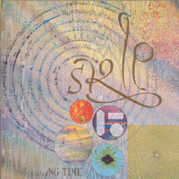
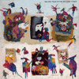

#ずーっと捜してました、渋谷のレコファンのアナログコーナーで発見。
帯には"決定版、これが何？"とか書いてありました。解説カードには振り付けが載っていました....この曲では踊れないと思いますが。
初めて聞いたBOBの後半は板倉さんのギターがとても格好良かったです。
KILLING TIME名義としては初のミニアルバムですね。8687の夕焼けを思わせるような音、BOBのアヴァンギャルド、PERUの微かな緊張感とか、この時点で既に色々な要素を包括してますね。
- BOB
- 8687
- PERU
- 板倉文 (guitars)
- 清水一登 (keyboards,xylophone,clarinet)
- MA-TO (tabla,computer)
- 斎藤ネコ (violins)
- WHACHO (percussions)
- MECKKEN (bass)
- 仙波清彦 (drums)
- 矢壁篤信 (drums)
- 栄田嘉彦 (violin)
- 山田雄司 (viola)
- 溝口肇 (cello)
EPIC/SONY RECORDS: 12-3H-259 (1986)
#なかなか売ってないです、こんな面白いCDが全然手に入らないなんて、非常に問題。
One for Each Sentimentは原題「収容所」。日没（すごいイイ曲だと思う）は板倉文さんとの共作。

- SKIP
- 老人たちの夢 -Hearing Without A Break While Not Hearing A Break-
- One For Each Sentiment
- 日没
produced by KILLING TIME,飯泉俊之
directed by 福岡知彦
- 板倉文
- 清水一登
- MA*TO
- 斎藤ネコ
- WHACHO
- MECKKEN
- 仙波清彦
- 青山純
- 松本治 (trombone)
- 栄田嘉彦 (violin)
- 山田雄司 (viola)
- 藤森亮一 (cello)
EPIC/SONY RECORDS: 28-8H-142 (1987)
#ヒット曲(?)「奴隷の恩返し」(ようやく)収録です。これが初のフルアルバムになるみたいです。「IRENE」はサンディーや小川美潮がボーカルを取る、組曲みたいな感じの曲です。
「沈黙する湖」とかとてもとても綺麗な曲です、信じられないくらいの。
アバンギャルドでノスタルジックでポップ。こんなバンドがKILLING TIME(ヒマつぶし)を名乗ってるんだから、フツーな音楽なんて聴けなくなっちゃいます。
- KOKOROWA
- 既知との遭遇 [A close encounter with you know what]
- 沈黙する湖 [Psychotropicnic]
- IRENE
- 虫の知らせ [Presentiment]
- 腰くだけ [A'ole i pau k'i'ni]
- BENGAWAN SOLO
- SONG FOR FOOD
- オフちゃん
- 奴隷の恩返し
produced by KILLING TIME,飯泉俊之
directed by 福岡知彦
composed by
青山純 (1.)
清水一登 (2.4-b.)
板倉文 (3.4-d.5.)
WHACHO (4-a.)
Ma*To (4-e.)
- 板倉文
- 清水一登
- Ma*To
- 斎藤ネコ
- WHACHO
- 青山純
- 横山雅史
- SANDII (vocals on 4-2.)
- 小川美潮 (vocals on 4-3.)
- HAMZA EL DIN (vocals on 4-4.)
- YOSHIPON (vocals on 4-1.)
- ああもん (vocals on 4-5.)
- ANTENOR DE PAULA BARROS JR. (chorus)
- FRANCIS SILVIA (chorus)
- 太田裕美 (chorus)
- れいち (chorus)
- 栄田嘉彦 (violin)
- 斉藤真知亜 (violin)
- 山田雄司 (viola)
- 藤森亮一 (cello)
EPIC/SONY RECORDS: 32-8H-5041 (1988.8.26)
#KILLING TIMEのベスト盤.....高校の頃にこのCDを中古屋で買ってなかったら、こんなCDを沢山買う人生になってなかったんじゃないかなと思います、そしたらこんなHPも作って無かったと思います。
とりあえずKILLING TIMEの入門盤としての一枚なんですけど、やっぱり廃盤。でも、ほんと見かけたら買ってあげてください。詳細なデータとかも付いてます。

- PERU
- BOB (edit version)
- 既知との遭遇 (a close encounter with you know what)
- 老人たちの夢 (hearing without a break whille not hearing a break)
- EBRIO
- 8687
- 沈黙する湖 (psychotropicnic)
- 日没
- 板倉文 (guitars.keyborads)
- 清水一登 (keyboards)
- Ma*To (tabla,synthesizers,keyboards)
- 斎藤ネコ (violins)
- WHACHO (percussions)
- 青山純 (drums,percussions)
- Mecken (bass)
- 横山雅史 (bass on 3.7.)
- 仙波清彦 (percussions on 2.8.)
- 矢壁篤信 (drums on 2.)
- 小川美潮 (vocals on 3.)
- 福岡ユタカ (vocals on 5.)
- Bruce Fowler (trombone on 5.)
- 栄田嘉彦 (violin on 6.8.)
- 山田雄司 (viola on 6.8.)
- 溝口肇 (cello on 6.)
- 藤森亮一 (cello on 8.)
EPIC/SONY RECORDS: 30-8H-5107 (1989)
#KILLING TIME名義でのラストアルバム。全6曲33分とやや短いですが、密度は高いです。
このアルバムは清水一登さんの色が強いです(3曲目6曲目以外は清水さん作曲)
3曲目「MIFUNE」は何故だかFUNK調、うーん板倉さんっぽくない....嫌いじゃないけど。
「BLIVITS」は清水一登さんのライヴに行くと大体いつもやっている曲、やっぱりこのメンバーで聴いてみたいですけど。
「Limbo's Dance」は.....ミニマルですね、ライヴ録音かな？

- Upon Hearing
- Fall for Sharp
- MIFUNE
- Blivits
- Bugdad
- Limbo's Dance
produced by KILLING TIME
directed by 福岡知彦
recorded,miexd by 飯尾芳史
- 板倉文 (guitars.string instruments)
- 清水一登 (keyboards,mallet instruments,woodwinds)
- Ma*To (tabla,keyboards)
- 斎藤ネコ (violin)
- WHACHO (percussions)
- 青山純 (drums,percussions)
- MECKEN (bass)
- 篠田昌巳 (alto sax,bariton sax)
- 村田陽一 (trombone)
EPIC/SONY RECORDS: ESCB-1066 (1990)
#レコード会社が移籍になっての3枚目、チャクラ名義でのラストアルバムになります。また大幅にメンバーが変わっています。というか板倉文 + 小川美潮 = ちゃくら という事みたいですね。
もうこの頃はKILLING TIMEとしても動きだしてたみたいで、メンバーを見るとKILLING TIMEとハニワを足したような感じです。やっぱり変わった曲が多いです、なんか当時の他のニューウェーブのバンドと比べても明かに異色です。エスニック/ユーモア/ポップ/パンク。
#Absord Music Japanから再発、ボーナストラック2曲でした。噂には聞いてたんだけど、やっぱりライヴの方が数段面白いみたい、これに追加された音源は
いかにもな仙波清彦リズムとか清水一登の音とか入ってて、パンク+プログレみたいな感じ。面白いー、やっぱもう10年早く生まれたかったな。(2002.7.25)

- スウィング（タコにささげるよ）
- 南洋でヨイショ
- 本当のこと言えば
- 私と百貨店
- ペリカン
- まだ
- テーマ (instrumental)
- 主婦と生活 (bonus track)
- 金太郎 (bonus track)
composed by 板倉文
arranged by CHAKRA
- 板倉文
- 小川美潮
- 村上秀一 (drums,percussions)
- 久米大作 (keyboards)
- 仙波清彦 (percussions)
- 古田たかし (drums,percussions)
- 幸田実 (bass)
- 清水一登 (piano,clarinet,marimba)
- 藤井将登 (tabla)
- 逆瀬川健二 (tamboura)
on track 8.9.
- 板倉文 (guitars)
- 小川美潮 (vocals)
- 清水一登 (keyboards,xylophone)
- 久米大作 (keyboards)
- 幸田実 (bass)
- 矢壁篤信 (drums)
- 仙波清彦 (drums,percussions)
- 藤井将登 (tabla)
VAP: VPCC-83001 (original release 1981.11.21)
ABSORD MUSIC JAPAN: ABCS-30 (2002.7.24)
#小川美潮さんのvapからのソロアルバム。後でSONYから出るアルバムとは随分印象が違います。白井良明さんのプロデュースで、ユーモラスな感じのアルバム。こうして聴くとやっぱ板倉文と小川美潮って相性が良いんだなと、改めて思いました。
- おーい
- 行っといで
- 時計屋
- ポテトロイド
- おかしな午後
- 光の糸 金の糸
- 花の子供
produced by 白井良明
- 小川美潮 (vocals,piano)
- 白井良明 (guitars,bass,percussions on 1.2.3.5.7.)
- 小滝満 (keyboards,programming on 1.2.5.)
- 橿渕哲郎 (drums,percussions on 1.2.5.)
- 中原信雄 (bass on 3.)
- 近藤達郎 (keyboards,harmonica on 3.)
- 清水一登 (vibraphone on 3.)
- 友田慎吾 (drums,percussions on 3.)
- 水村敬一 (drums,percussions on 4.)
- 西尾明博 (drums,percussions on 4.)
- 幸田実 (bass on 4.)
- 平沢幸雄 (guitars on 4.)
- 田村恵 (指笛 on 5.)
- 板倉文 (acoustic guitars on 5.)
- 細野晴臣 (programming on 6.)
- 渋谷毅 (piano on 7.)
- 川端民雄 (bass on 7.)
vap: VPCC-83002 (1984)
ストリングスの曲と半々くらいかな？結局最近気付いたんですけど、板倉文さんの魅力ってやっぱり和音なんだなと。メロディもリズムも好きなんですけど、初期GONTITIのアレンジとかサントラの仕事とか聴いてると、やっぱりイチバン特徴的なのは和音の響かせ方じゃないかなと、思いまして。
そんなわけで、このアルバムも見かけたら買ってください、いいから。
あとやっぱ"日没"...イイ曲ですね。

- RUST OF THE FRAME
- 重い靴
- 虹の架け橋
- 二つの夜
- STARDUST
- DIALOGUE
- マニラ出張
- OVER THE RAINBOW
- MEMORIES OF YOU
- 響きの庭
- 日没
- 板倉文 (guitars.keyborads)
- 清水一登 (keyboards,sax,percussions)
- Ma*To (computer,synthesizer manipulation,keyboards)
- 斎藤ネコ (violin)
- WHACHO (percussions)
- 青山純 (drums)
- 横山雅史 (bass)
- 石井AQ (computer,synthesizer manipulation)
- 渋谷毅 (keyboards)
- 川端民生 (bass)
- 藤井信雄 (drums)
EPIC/SONY RECORDS: 28 8H-5054 (1988)
#アニメ映画のサントラです。クレジットには無いですが、KILLING TIMEのメンバーが参加しているはず。
- Out of the Door
恋のときめき
- Holy light
Running
- メランコリー"ジンタ"
水曜日の午後
- 安らぎ
予感
- 驚愕
センチメンタル
- 主題歌"メランコリーの軌跡"
- 桜の花びら
舞踏会
- 目覚め
記憶の瞬き
- Power of Love
メランコリー"ジンタ"Part 2
青い季節
- BGM #1,#2
- BGM #3,#4
- BGM #5,#6,#7
Kitty records: H30K-20026 (1986)
#クレジット無いですけど、KILLING TIMEでの演奏が収録されているので、参加しているはず。

- 花のまち
- あじさいのうた
- 朝の地下鉄
- ランニング
- エナジー
- オーバーチュア
- 花のまち
- 昼下り倉庫にて (台詞入り)
- 森下麦子
- 今 これから
- 窓の中の孤独
- 出会い
- 炎の向うに
- Tonight's the night
VICTOR: VDR-1463 (1987)
#斎藤ネコカルテットの1st、最近(2001)再発されて
斎藤ネコさんのところから通販できます。色々な方の曲が収録されています、清水さんの提供はおUでも演奏されているwaltz#4。
- 産業革命 (鈴木さえ子)
- つつむ (斎藤毅)
- KARAPE (斎藤毅)
- EIN KATZENSPRUNG MIT HAIKU (山下洋輔)
- 麒麟等が歩いている (鈴木慶一)
- GO AHEAD, MY FRIEND (矢野顕子)
- 手品師の心臓 (谷山浩子)
- WALTZ #4 (清水一登)
- KOKIRI (板倉文)
- リゲインNO.1 (近藤達郎)
- とても短い歌 (江藤直子)
- 斎藤ネコ (1st violin)
- グレート栄田 (2nd violin)
- 山田雄司 (viola)
- 藤森亮一 (cello)
SAITO NEKO LABEL: NS-0002 (2001)
#糸川玲子さん....ピアニストの方みたいです、良く知らないんですけどKILLING TIME関係ということで。あと個人的に結構好きなので。
ジョビンの曲を板倉文さんが3曲アレンジしてます。軽快な感じで結構気持ちいいです。
- ７つの指輪 (7 aneis)
- 夢の中で (em sonos)
- lluvia
- ばらに降る雨 (double rainbow)
- fantasia
- paseo solitario
- surf board
- chanson pour michelle
- namorado
- 悲しい鳥 (pajaro triste)
- sabia
- 秘密 (secreto)
- 糸川玲子 (piano)
- 藤原真理 (cello on 5.)
- 向井滋春 (trombone on 4.)
- 小宅玉実 (flute on 4.)
- 板倉文 (guitars on 7.)
- 清水一登 (synthesizers on 4.7.)(marimba,vibraphone on 7.)
- 川島"banana"裕二 (synthesizers on 4.7.11.)
- 藤井"ma*to将登 (programming,synthesizers)
- 石井"AQ"明 (programming,synthesizers,sampling)
Nippon Colombia: COCY-75058 (1992)
#1998/12/24の復活KILLING TIMEの時にゲストで出ていらっしゃった、モンゴルの歌手の方です。このアルバムが1stで、サウンドプロデュースを板倉文さんがやっています。清水一登さんは3,4,5でピアノを弾いてます。
- ホルチン
- 牧歌
- 遠方の友
- 虹を求めて
- 燕子
- 二つの山
- 牧羊曲
- ナリンジュク
- ああ花嫁 pt2
- 子守歌
- 雁のふるさと
- 花
- ああ花嫁 pt1
- wuyontana (vocals,chorus)
- 板倉文 (arrangement,guitars on 1.3.4.6.7.9.11.12.13.)
- 今堀恒雄 (arrangement,guitars on 8.)
- 清水一登 (piano on 3.4.5.)
- 仙波清彦 (percussions,drums on 6.12.)
- Amemiya Takeshi (synthesizer,programming on 1.3.4.7.11.12.)
- Ono Masashi (steel drums,percussions on 2.7.)
- Qi Burigude (marinhor on 3.9.)
- Liu Feng (er-hu on 4.10.11.12.)
OMAGATOKI: OMCA-1010 (1998.4.21)
#長いこと捜してました、とうとう見つけました。会社帰りの中古屋さんで\990でした。気合入れて捜すと見つからないのに、ふら～っとしてると見つかるのはどーゆーことでしょうかね、待ち合わせの余った時間とか。マーフィーの法則ってやつですかね。
バナナ(BAnaNA-UG)と重藤功(DATE OF BIRTH)と小西康陽(pizzicato five)と和久井光司(SCREEN)と、なんと言っても板倉文(KILLING TIME)のオムニバスです。
もちろん板倉文の2曲(EBRIOはベストに収録)はKILLING TIME名義の初録音らしいです、どうも。ルナチコは太田裕美の歌うメチャ可愛い曲です、ちょっと渋谷系っぽかったり。やっぱセンス違うわ～スゴイ。
あんま板倉文の事ばっか書いててもアレなんで他なんですけど、笑ったのは小西康陽。この頃はまだNON STANDARDの時期のpizzicato fiveですが、収録曲はYOUNG ODEON名義のモノ。
なんかマニアックな映画音楽風インストです。考えて見ればピチカートマニアな人もこのCD捜してたりするんですよね、レアな訳です。
あと、バナナさんも格好良いです。個人的には美味しすぎる面子のオムニバスです。1986年のレコードとは思えない内容です、素晴らし。
- CELL/バナナ
- AROUND AROUND/重藤功
- 新パゾリーニ/小西康陽
- 博愛の君/和久井光司
- EBRIO/板倉文
- ルナチコ/板倉文
- HEAVEN LINE/バナナ
- 黒い十人の女/小西康陽
- KING OF WALTZ/重藤功
- BALLERINA/和久井光司
directed by 福岡知彦
- バナナ (keyboards on 1.7.)
- 矢壁篤信 (drums on 1.7.)
- 清水一登 (outroduction arrangement on 7.)(piano on 5.)
- RA (startman on 7.)
- WHACHO (percussions on 1.5.)
- 福岡ユタカ (voice on 1.5.)
- MECKKEN (bass on 1.5.7.)
- 板倉文 (guitars on 1.5.6.)
- 中西俊夫 (vocals on 2.)
- 太田裕美 (vocals on 6.)
- MATTO藤井 (percussions on 5.)
- 斉藤猫 (violin on 5.)
- Bruce Fowler (trombone on 5.)
- 小西康陽 (on 3.8.)
- 井上大介 (on 3.8.)
- 重藤功 (on 2.9.)
- 重藤進 (on 2.9.)
- 重藤賢一 (on 2.9.)
- NORICO (on 2.9.)
- 和久井光司 (vocals on 4.10.)
- 宮崎裕二 (guitars on 4.10.)
- 石川健一 (keyboards on 4.10.)
- 小野章 (bass on 4.10.)
- 河東勇治 (drums on 4.10.)
- 梅津和時 (alto sax,clarinet on 4.10.)
- 吉田哲治 (trumpet on 4.10.)
- 板橋博 (trombone on 4.10.)
- 山口美和子 (chorus on 4.10.)
- 飯村直子 (chorus on 4.10.)
EPIC/SONY RECORDS: ESCB-1366 (1992.12.2 original release 1986.6.21)
#お目当ては20曲目の板倉文ですが、他にも国内ではEXPO,SYZYGYS,Tipographicaなど海外ではF.Frith(Henry Cow)とかHenry KaiserとかJohn Zornとか色々。私的にはストライクゾーンど真中って感じのCDです。美味しすぎます。
前衛的で難しい事やっててもポップだったりユーモラスだったりしている所が好きです、本当は色々考えていてもそんな事前面に出さないような。
あと、元KILLING TIMEの横山雅史さんがtipographicaに在籍してたのを知ってビックリ。
やっぱりそんな中でも板倉文。結構珍しく室内楽みたいな実験的な事をやってるんみたいですけど、それでも心地よい旋律が聞こえてくるあたり。

- Henry Kaiser/Samma No Aji
- Picky Picnic/Welcome To Heaven
- Asuka Yuji
- 玖保キリコ
- Todoroki Kaoru
- Andreas Dorau/Hollen-Tingeltangel
- Constance Towers/Great Buddha Air Mail
- Fred Frith/Wilder Tongues
- Syzygys/Le Fonce (3)
- 冷水ひとみ (micro tuned organ,percussions)
- 西田ひろみ (violin,percussions)
- Lost Gringos/Unter dem Vulkan
- Laemonz/Bela Bodocampode
- Matsunobu Shigemitsu (guitars)
- Otsuki Yukiko (keyboards)
- Ohira Hiromoto (clarinet)
- Miyakoshi Hiroki (sax)
- Cockie Matsumoto (drums)
- 西田ひろみ (violin)
- Adachi Tadashi (tuba)
- Nomura Osamu (percussions)
- Wada Monaca (bass)
- Kawano (trombone)
- Henry Kaiser/Tokyo Boshoku
- Henry Kaiser/Kohayakawake No Aki
- Der Plan/Fackel der Sehnsucht
- Tipographica/Rhythm Mountains～Tanker
- 今堀恒雄 (gutiars,bass)
- 外山明 (drums)
- 菊地成孔 (sax)
- 横山雅史 (bass)
- 水上聡 (keyboards)
- Pinky Picnic & Pyrolator/Muerder's Night Fever
- Jumbo/The Boy From Ipanema
- EXPO/Ebi Combi
- 山口優
- 松前公高
- 今堀恒雄 (gutiars,bass)
- 外山明 (drums)
- 西岡ひろみ (violin)
- 菊地成孔 (sax)
- John Zorn/Purged Specimen
- Fred Frith/Stay That Way
- Pyrolator/Ritual
- Henry Kaiser/Zange No Yaiba
- 板倉文/Lotus
- 板倉文 (guitars)
- 青山純 (drums)
- Mecken (bass)
- 清水一登 (gamelan)
- 斎藤ネコ (violin)
- 栄田嘉彦 (violin)
- 山田雄二 (viola)
- 藤森亮一 (cello)
Executive Producer: 玖保キリコ
WAVE: WWCX-2010 (1989)